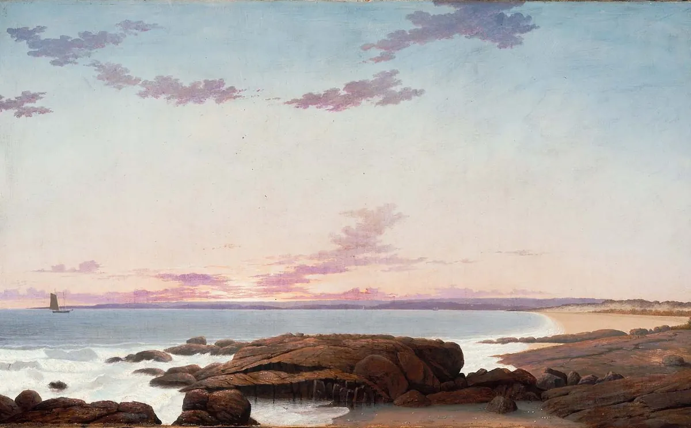

Site 6 of 9 · Fitz Henry Lane
The Loaf, looking along Coffin's Beach
Vantage documented

- Standing point
- Two Penny Loaf (42.65491, -70.71998)
- Looking at
- Coffin's Beach
- Direction of view
- ENE, 58° from true north
- Distance to subject
- 977 m (3,206 ft)
- The painter's light
- sunrise: about 5:34 a.m. on August 1, 2027
Where they stood
The back of the canvas reads “View of Coffin's Beach, from the rocks at the Loaf, after a sketch taken, August, 1862.” Ronnberg plotted the viewpoint, and MFA staff concluded Lane used a camera lucida, then widened the scene in the painting.152
The light
Dawn: an 1862 notice says the sun is just rising behind the hills, in pink-to-blue light.152 At sunrise in early August the sun comes up in the east-northeast, nearly straight down the line of view, so the scene is backlit.
Paint it today
- The Two Penny Loaf is mapped as a nature reserve (OpenStreetMap); we did not verify access to Coffin's Beach.133
- Be in place before sunrise (5:34 a.m. on August 1, 2027) and paint the first 20 minutes.
- A camera lucida, or a phone photo traced the same way, is a fair modern stand-in for Lane's method.